Produto próprio · Design e código
UseCtt
Um report editorial que transforma o histórico de treinos do Strava numa maratona, do KM 0 à chegada.
- Papel
- Produto ponta a ponta: conceito, design system e código
- Ferramentas
- Figma, Figma Make, Claude, Next.js, Supabase, API do Strava
- Entrega
- Landing, página do atleta, card do Stories e design system
- Status
- No ar, em beta
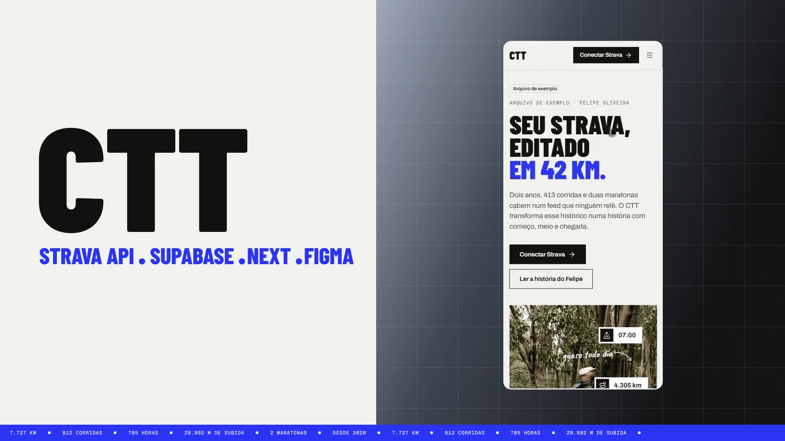
Contexto
O CTT nasceu como um painel pessoal ligado ao Strava: gráfico de volume, gráfico de ritmo, tabela de recordes. Funcionava, mas não dizia nada que o próprio Strava já não dissesse. Era mais um dashboard.
A pergunta que mudou o projeto foi o que seria útil para um corredor que gosta de dados. A resposta não era mais um gráfico: era contexto. Quando o hábito começou, quando o volume subiu, onde a forma caiu e quanto tempo levou para voltar. Coisas que ficam espalhadas num feed que ninguém relê.
O projeto também tinha um segundo objetivo: pôr em prática o fluxo entre Figma e Claude para gerar código e levar um produto até produção com dados reais, não com uma API de exemplo.
Do painel à edição
O primeiro protótipo no Figma Make já tinha uma boa direção visual, mas continuava organizado por tipo de gráfico: um bloco de volume, um de forma, um de recordes. A versão final é organizada pela história. Cada seção é um trecho da prova, e o gráfico só aparece quando ajuda a contar aquele trecho.
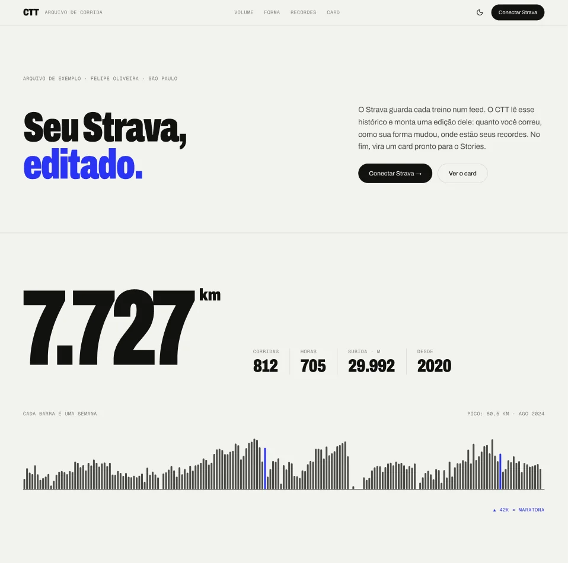
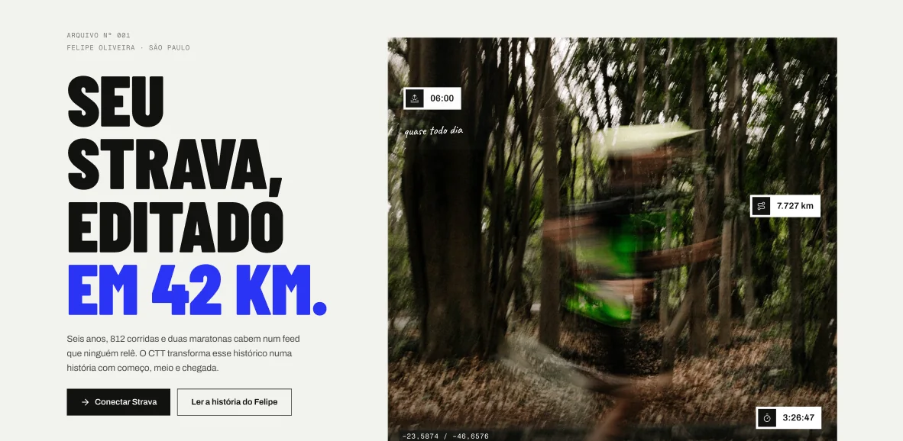
A página é uma maratona
A leitura acompanha uma prova de 42 km. Uma barra no topo mostra em que quilômetro você está, e cada capítulo abre com um marcador de KM. Só dois capítulos saem do fundo claro: o muro, em preto, e a chegada, em ultramar.
Os textos não foram escritos para mim: saem dos dados. Cada capítulo escolhe o próprio fato a partir dos dados de quem conectou: o ano em que o hábito começou, o ano de maior volume, a maior queda de forma e a melhor maratona. Se um atleta não tem dado suficiente para um capítulo, ele simplesmente não aparece.
- KM 0 Largada
- KM 5 A primeira corrida
- KM 10 O hábito
- KM 21 O volume
- KM 21,1 Os recordes
- KM 30 O muro
- KM 42 A chegada
- KM 42,2 Pós-prova
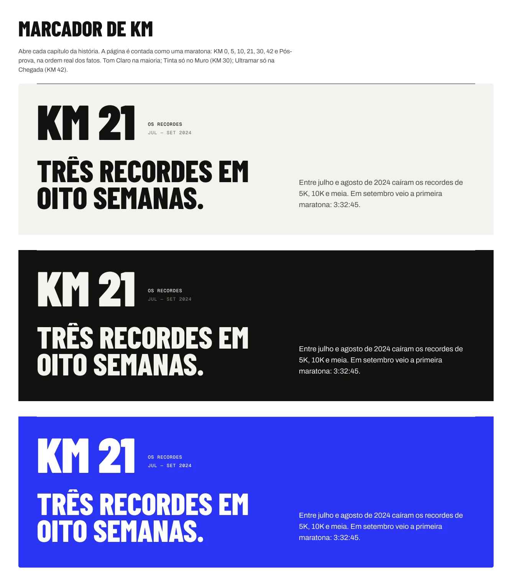
O muro dos 30
Na maratona, o muro é aquele quilômetro, perto do 30, em que o corpo cansa e quase todo mundo pensa "será que vai dar?". No report, ele é o trecho em que a forma mais caiu. No meu caso, a lesão de 2025 que me tirou da Maratona do Rio.
Para achar esse trecho sem depender de ninguém marcar nada, a forma é calculada a partir da frequência cardíaca de cada treino: a média da carga de 42 dias vira a forma, a de 7 dias vira a fadiga. O capítulo procura a maior queda de forma dentro de 12 semanas, mostra de quanto para quanto ela caiu e quanto tempo levou para voltar.
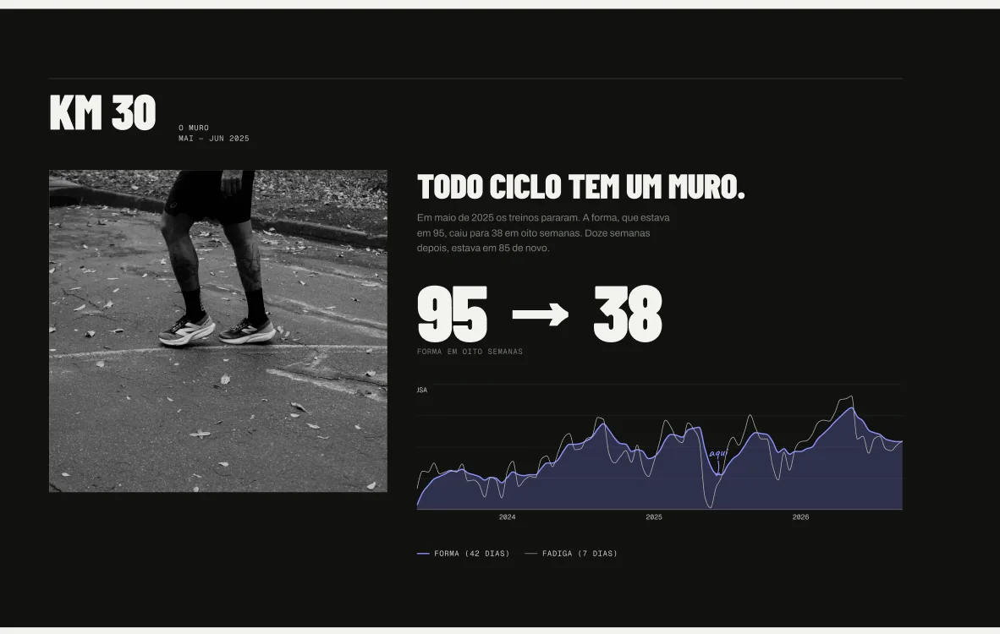
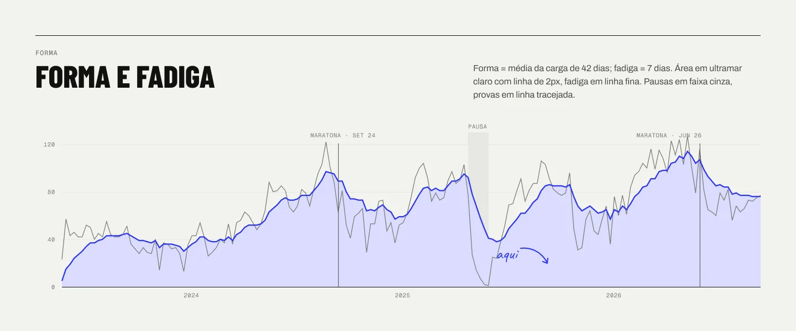
O projeto em números
Um sistema pequeno o bastante para caber na cabeça, e todo documentado antes de virar código.
- capítulos gerados por dados
- 7
- cor de acento
- 1
- componentes documentados
- 16
- vagas no beta
- 10
Cor e tipografia
Papel, tinta e um ultramar. A referência veio de marcas de corrida como Bandit e On: muito fundo claro, texto quase preto e um único acento. A primeira versão era laranja, e foi a primeira coisa que saiu, porque laranja lembra o próprio Strava. O ultramar ficou no lugar e ganhou uma regra: ele marca o que importa (recorde, pico, prova, estado ativo) e nunca decora.
As cores são tokens por função, como fundo, texto, borda e gráfico. Por isso o mesmo componente funciona no capítulo claro, no preto do muro e no ultramar da chegada sem precisar de uma versão para cada um.
Números grandes, texto calmo. Barlow Condensed em caixa alta para números e títulos: é a imagem da página, como um número de peito. Archivo para ler, Geist Mono para rótulos e eixos, e Caveat só nas anotações à mão, como "quase todo dia" escrito sobre a foto.
A ideia inicial era usar a própria Archivo mais estreita nos títulos, pelo eixo de largura. Só que esse ajuste não passava do Figma para o código com fidelidade, e o sistema precisava ser o mesmo nos dois lados. A troca pela Barlow Condensed resolveu isso sem perder o caráter.
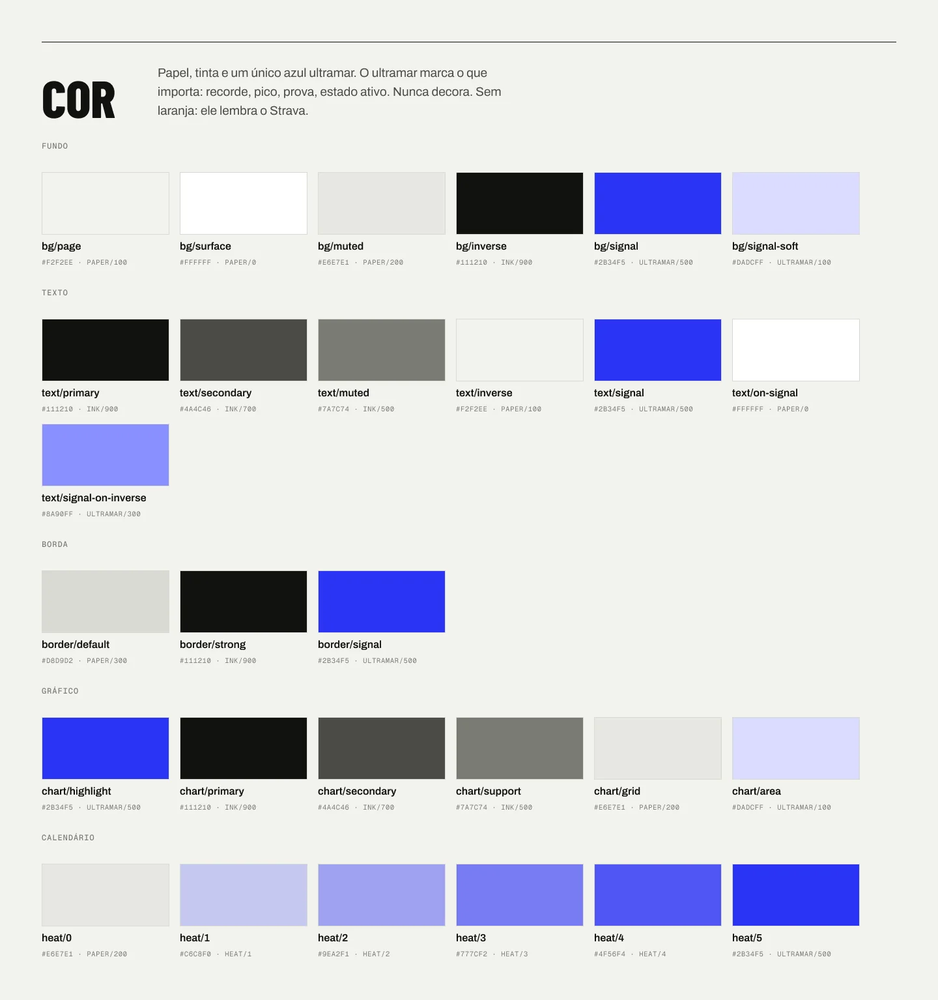
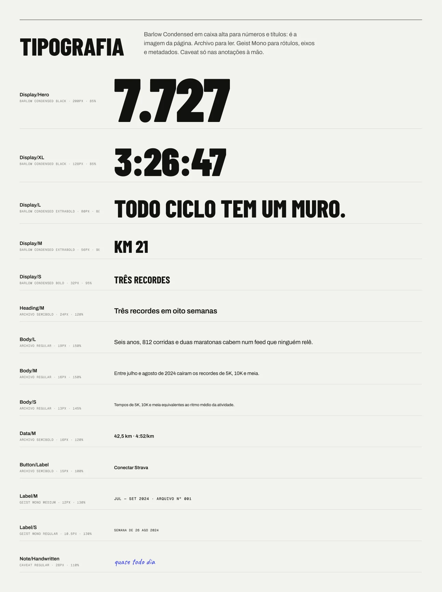
O dado no centro
Os recordes dividem uma mesma escala de ritmo, então dá para comparar as quatro distâncias de relance. O recorde mais recente ganha o bloco em ultramar, com o tempo anterior riscado logo acima.
A chegada é o único capítulo inteiro em ultramar: o tempo da maratona em tamanho de pôster, as 16 semanas de preparação em barras e a diferença para a prova anterior.
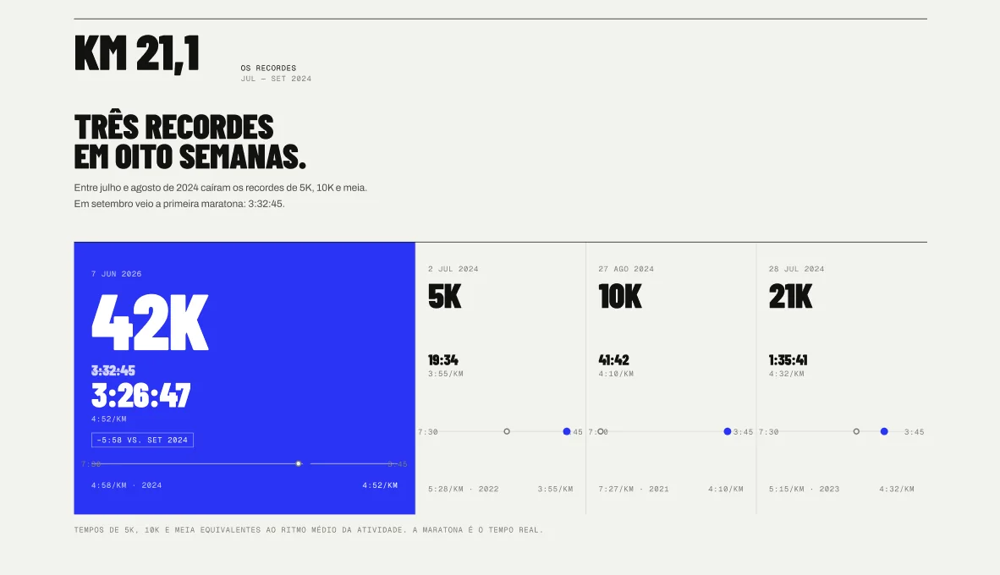
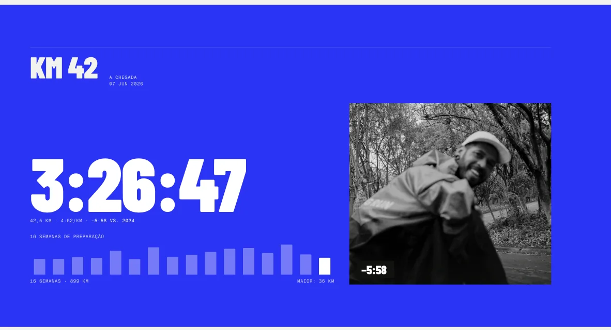
Uma restrição que virou produto
No modo atual, a API do Strava permite só 10 atletas conectados ao app. Em vez de esconder o limite atrás de um erro, ele virou parte da página: um contador de vagas que mostra quantas pessoas estão testando, com os estados de beta aberto, últimas vagas e lotado.
Quando as dez vagas estão ocupadas, a conexão abre uma fila de espera por e-mail. O número vem do banco em tempo real, e quem desconecta a conta libera a vaga para o próximo.
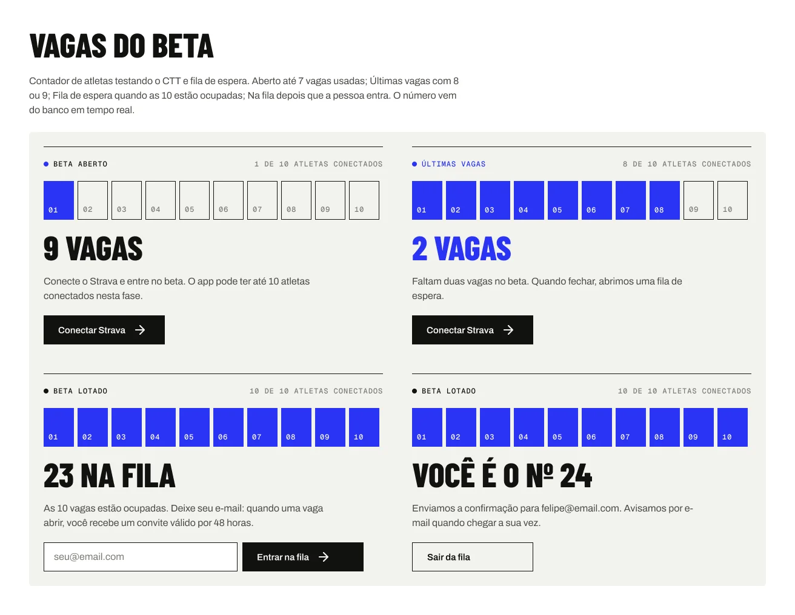
Um treino vira uma capa
Depois da prova, o atleta gera um card 9:16 para o Instagram, em papel, tinta ou ultramar. Os números ficam entre 12% e 88% da altura, longe das áreas que o próprio Instagram cobre com a interface.
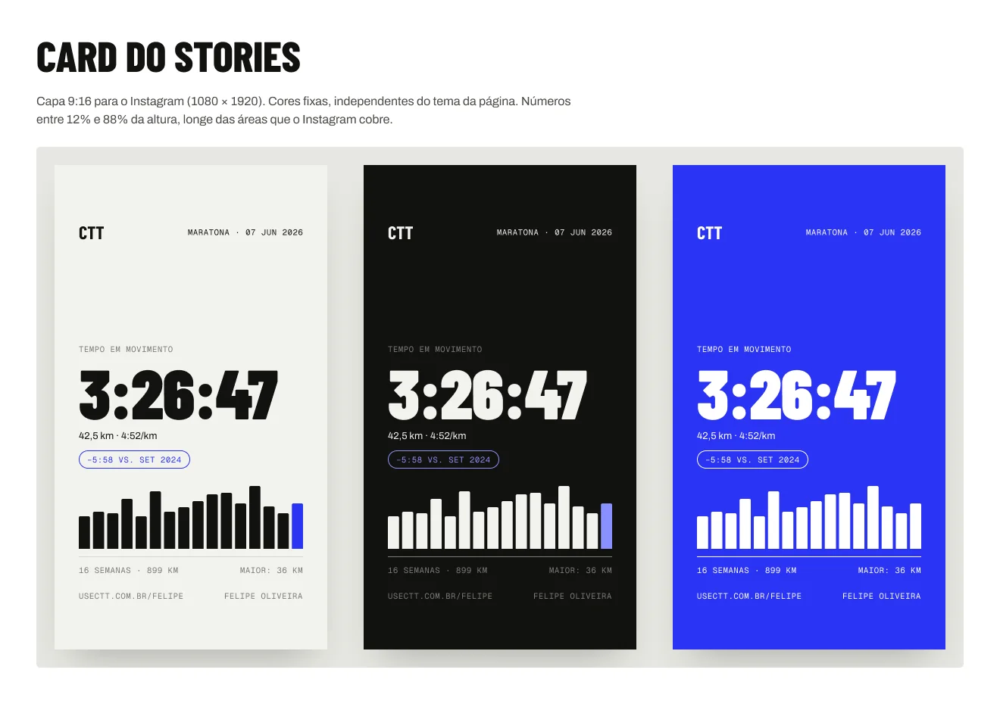
Do Figma ao código
Figma e Claude trabalhando juntos, com o design system como fonte da verdade.
-
Protótipo rápido, sistema documentado
Figma Make · Figma
O Figma Make serviu para testar direções de página em horas. O que sobreviveu foi documentado no Figma como design system: fundamentos, 16 componentes e os padrões de gráfico, cada um com as regras de uso.
-
Código a partir do sistema, não do print
Claude · Next.js · Tailwind · shadcn/ui
Com o Claude, os tokens e componentes do Figma viraram código em Next.js, com Tailwind e componentes shadcn/ui. Os textos de cada capítulo são funções testadas: dado um histórico, elas escolhem o fato e escrevem a frase.
-
Dados reais desde o primeiro dia
API do Strava · Supabase · Vercel
O login é feito pelo Strava, os treinos são importados para o Supabase e a página de cada atleta ganha um endereço próprio, como usectt.com.br/felipe-oliveira. Tudo publicado na Vercel, no domínio do projeto.
Resultado
O CTT deixou de ser um painel genérico e virou um produto com ponto de vista: qualquer corredor conecta o Strava e recebe a própria história, contada como uma prova, com um card pronto para compartilhar.
Está no ar em beta, com dez vagas. Se você corre, conecte sua conta e me conte o que achou.
Contato
Gostou do que viu? Vamos conversar.